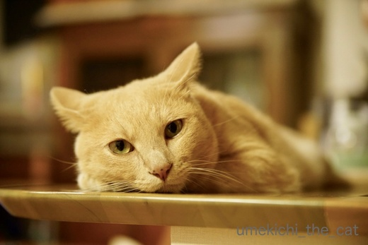
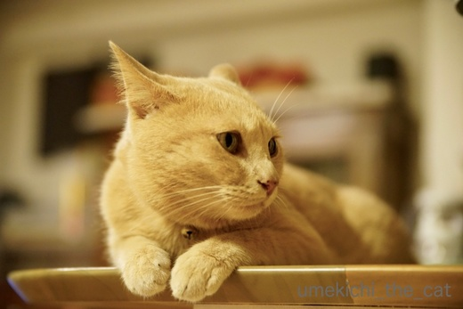
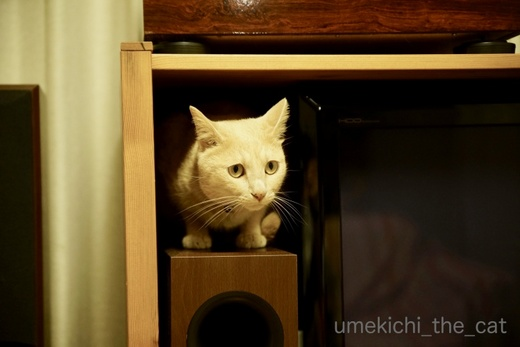
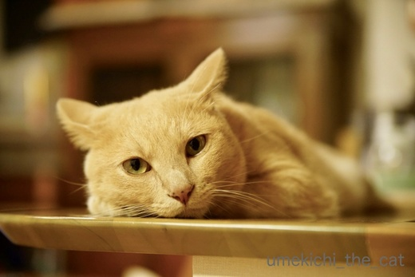
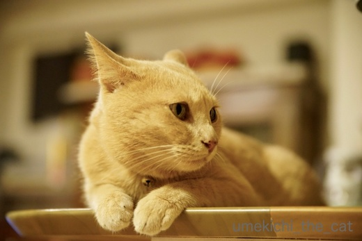
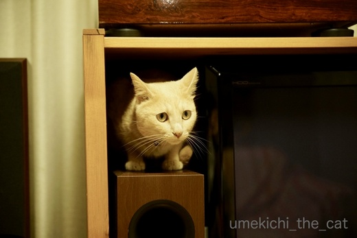

びびりん坊 [梅吉]
８日（金）の夜、我が家地方では短時間でしたが激しい雨と雷が。

雨粒が窓ガラスを叩いています。
平常心のように見える梅吉さんですがイカ耳w

ピカッ![[雷]](https://blog.ss-blog.jp/_images_e/5.gif) と光ると上体を起こす。イカ耳度が増しましたよww
と光ると上体を起こす。イカ耳度が増しましたよww

バリバリバリッと音がすると動揺を隠せなくなりましたwww
イカ耳度MAX！

とりあえずテレビ横の狭いスペースに潜んでみる。

![[猫]](https://blog.ss-blog.jp/_images_e/101.gif) あかん ばりばりおばけに おそわれるかもしれへん・・・・・
あかん ばりばりおばけに おそわれるかもしれへん・・・・・
この後は隠れる場所を探して人間のベッドの下、クローゼットの中、押入れ等
家の中をウロウロウロウロ挙動不審・・・・・
遠くでゴロゴロ程度のものはありましたけどこれほど近い距離で大音響の雷が鳴ったのは
梅吉が我が家に来た３年前以来かな。
幼い梅吉はすっとんでテレビ下の隙間に隠れました。
今はその隙間には入れません( ´艸｀)
夜寝る頃には挙動不審もかなり落ち着きましたが
蒸し暑いのにぴとーっと体を寄せて来て寝苦しかったです(^▽^;)
恐ろしい瞬間にこそ頼って欲しいのですが・・・
でもその前に、お家の中で恐ろしい目にあったことなんて無いでしょ。
翌土曜日の午前中もなんとなく挙動不審でずーっと私の後を付いて回っていましたw
びびりん坊(*>艸<)
梅吉3歳、人間だと28歳くらいのようですがまだまだ坊主、小僧という形容がぴったりです。

お昼過ぎ、やっと雷の恐怖体験から抜け出してお昼寝。
腑抜けた顔してお昼寝できる安心と幸せをかみしめてくださいよー。
 ↑ガブッと一押し↑
↑ガブッと一押し↑
大阪でも北海道のホワイトアスパラ（缶、瓶詰じゃなく生）が手に入る季節になりました！
ひと月も経たないうちに入手不可になるので今のうちにせっせと食べています。
グリーンも紫も好きだけどホワイトアスパラ大好きー！！
昨年からベランダのプランターで紫アスパラを育てています。
収穫期は３月下旬から４月の初旬。
が、太くて立派なのはなかなか育ちません。
比較対象物を置けばよかったでしょうか。箸ぐらいの太さしかないのです。
それでも初年度よりは太くなってきたかな。
来年以降はさらに期待。
ほっそいとはいえ採り立てのアスパラは最高に甘くて美味しいんですよー。
（野菜は全部そうだけど）
採ったらすぐ食べたいので一回に食べられるのは1〜２本。
美味しいものは少しだけって言いますがこれは少なすぎ！
もっと食べたいーってフラストレーションが溜まりますw
プロが作ったものは太くて立派。
ああ、美味しいものをがっつり食べられる幸せ。
いつもはオリーブオイルをまぶしてグリル焼きにするのですが
今回はボイルにて。
（グリル焼き、簡単で香ばしく焼き目が付くのでめちゃ旨です。
お酒のアテとしても最高！おすすめですよー！！）
オランディーヌソースもつくりました。（ちょっとゆるい。汗）
いやー、美味しかったです。
スプマンテを空けてごきげんなおとーさんとおかーさんの傍でたそがれる梅吉さん。
いま ばりばりいうおばけきたら どないしよ よっぱらいは たよれへんで・・・

雨粒が窓ガラスを叩いています。
平常心のように見える梅吉さんですがイカ耳w

ピカッ

バリバリバリッと音がすると動揺を隠せなくなりましたwww
イカ耳度MAX！

とりあえずテレビ横の狭いスペースに潜んでみる。

この後は隠れる場所を探して人間のベッドの下、クローゼットの中、押入れ等
家の中をウロウロウロウロ挙動不審・・・・・
遠くでゴロゴロ程度のものはありましたけどこれほど近い距離で大音響の雷が鳴ったのは
梅吉が我が家に来た３年前以来かな。
幼い梅吉はすっとんでテレビ下の隙間に隠れました。
今はその隙間には入れません( ´艸｀)
夜寝る頃には挙動不審もかなり落ち着きましたが
蒸し暑いのにぴとーっと体を寄せて来て寝苦しかったです(^▽^;)
恐ろしい瞬間にこそ頼って欲しいのですが・・・
でもその前に、お家の中で恐ろしい目にあったことなんて無いでしょ。
翌土曜日の午前中もなんとなく挙動不審でずーっと私の後を付いて回っていましたw
びびりん坊(*>艸<)
梅吉3歳、人間だと28歳くらいのようですがまだまだ坊主、小僧という形容がぴったりです。

お昼過ぎ、やっと雷の恐怖体験から抜け出してお昼寝。
腑抜けた顔してお昼寝できる安心と幸せをかみしめてくださいよー。
大阪でも北海道のホワイトアスパラ（缶、瓶詰じゃなく生）が手に入る季節になりました！
ひと月も経たないうちに入手不可になるので今のうちにせっせと食べています。
グリーンも紫も好きだけどホワイトアスパラ大好きー！！
昨年からベランダのプランターで紫アスパラを育てています。
収穫期は３月下旬から４月の初旬。
が、太くて立派なのはなかなか育ちません。
比較対象物を置けばよかったでしょうか。箸ぐらいの太さしかないのです。
それでも初年度よりは太くなってきたかな。
来年以降はさらに期待。
ほっそいとはいえ採り立てのアスパラは最高に甘くて美味しいんですよー。
（野菜は全部そうだけど）
採ったらすぐ食べたいので一回に食べられるのは1〜２本。
美味しいものは少しだけって言いますがこれは少なすぎ！
もっと食べたいーってフラストレーションが溜まりますw
プロが作ったものは太くて立派。
ああ、美味しいものをがっつり食べられる幸せ。
いつもはオリーブオイルをまぶしてグリル焼きにするのですが
今回はボイルにて。
（グリル焼き、簡単で香ばしく焼き目が付くのでめちゃ旨です。
お酒のアテとしても最高！おすすめですよー！！）
オランディーヌソースもつくりました。（ちょっとゆるい。汗）
いやー、美味しかったです。
スプマンテを空けてごきげんなおとーさんとおかーさんの傍でたそがれる梅吉さん。

カフェオレ色の梅吉

梅吉 2023年8月10日 永眠


梅吉と出会った譲渡会

犬猫の理由なき殺処分ゼロ
妄想広告
UMEKICHI 光

爆発的に早い！
時々攻撃的！
Thanks to Mr.Boss365
爆発的に早い！
時々攻撃的！
Thanks to Mr.Boss365

梅吉さん、めっちゃイカ耳ですねぇ^^;
安心安全な我が家だ分かってても、本能なんですかねぇ＾＾
でも寝るときはひっついて寝るって可愛いなぁ(^O^)
うちの大御所はかみさんの足を枕に爆睡してたそうですｗ
他の３にゃんは一瞬起きたけど、かみさんが寛いでるので
そのまま寝たそうです^^;
by ニッキー (2018-06-11 12:11)
こんにちは。
梅吉君のイカ耳！！怖くなくて！！可愛いぞ！！（⌒ー⌒）
びびり対策として・・・
1.アザラシ帽を被せ音を聞かせない！！
2.サングラスをさせ雷を見せない！！
いかがでしょうか？
この季節、４・５月ですが、ドイツで白アスパラのメインディッシュを食べました！！
季節の到来を告げる食材みたいですね！！日本では白アスパラが手に入らないので残念です！！（￣ ￣！！）
梅吉君もスプマンテで酔い潰れたかにゃ！？by すもも(=^･ｪ･^=)
by Boss365 (2018-06-11 12:16)
梅吉さんのイカ耳！！
そしておめめが！！恐怖心ですね(;^_^A
雷が怖いのは可哀想になります！
ｓａｒａは平気だったので
雷がドーンとしていても出窓にいても平気でした！
Ｌｅａは生まれてからほどんど雷を
聞いたことがないので、どうなるのか？
ちょいと不安です！
安心して眠る梅吉さん！
その姿が見れるとホッとしますね(#^.^#)
by きぃ (2018-06-11 13:44)
怯えてる猫を見ると愛おしくて抱きしめたくなりますが、怖がってる間はダメなんです。あとでピトッと寄り添うところがたまらなく可愛いですね~。
紫のアスパラは食べたことないです。お味の違いを教えてくだされ。
by zombiekong (2018-06-11 15:38)
そっかー、梅吉さんは雷が苦手なのですね。
イカ耳姿は超キュートだから、ずーっと見ていたいけど、
これ以上の刺激は、白目をむいちゃうかもしれない？（←違うか…^_^;）
我が家のニャンズは、案外、雷は平気かもしれません。
地震の方が、オロオロかなぁ。。。
ところで、アスパラ！ 今年も無事の収穫、おめでとうございます！！
かわいいですねー。収穫時期の見極めが難しそうです。
せっかちの私は、1センチ出ただけで、引っこ抜きそう(*_*)
ホワイトアスパラ、いいなぁ～。今度見掛けたら、ぜひ入手しよう！！！
by morichan (2018-06-11 15:56)
三枚目は写ってないけど掃除機で・・・
おヒゲが引っ張られてなかった(^_^;)
梅吉様、何よりオヘソ隠さないと^_^;
ちょうど西村しのぶ『ライン』第4巻で
アスパラガスガーリックソテーを食す回
を読んでましたが美味しそうですね(^^)
by middrinn (2018-06-11 16:44)
金曜日は甲子園に野球観戦に行っていた娘、
大雨で中止になったとかで早いご帰還でした。
こちらは、雨降ったのかどうか？
雷はなかったと思います。
梅吉さん、揃えた手が可愛いですね。
梅吉さんにとっては、初めての大きな音、
怖くて不安だけども、興味津々という感じもしました。
by kiki (2018-06-11 17:04)
うん、寄り添ってくるって、
かっわいい～
by らしゅえいむ (2018-06-11 17:28)
梅吉さん、雷におどおどしちゃったのですね！
見事なイカ耳になっていますね(^^)
by ma2ma2 (2018-06-11 18:45)
うわ～イカ耳イカ耳(^_^)/心なしかお顔もスリム。
雷怖かったんだね。ああもう可愛いったらありゃしない(*^_^*)
by palpal (2018-06-11 18:47)
梅吉さんの不安げな顔がなんとも言えず可愛いです・・・。
うちの猫も雷が苦手で、顔を埋めて離れなかったのを思い出しました。
by kou (2018-06-11 19:06)
ニッキーさん＞
さすがゴッドマザー様はにゃんずさんに雷なんてへっちゃらと思わせるような
強いパワーをお持ちなのですね (・o・)
やはり「ゴッド」の呼び名にふさわしい！！
でもこの時の状況を考えると磔寝の最中のような・・・
ゴッドを磔にするにゃんずさんは只者ではありませぬw
Boss365さん＞
アザラシ帽再び( ´艸｀)
そうかー、その使い方は気づきませんでしたよw
音が遮断されるとともに「まいったなぁ とほほ・・・」と
思っているうちに雷なんて過ぎちゃいますね(^_－)☆
ドイツでアスパラなんて羨まし過ぎます！
ヨーロッパの方は春のアスパラを本当に待ちわびているようで
アスパラ市が立ったりするようですよね＾＾
日本でいうとタケノコみたいな感じでしょうか。
北海道のホワイトアスパラも負けていないと思うので
アルテピアッツァに行ってアスパラを食べ歩く北海道ツアー
なんていかがでしょうか(๑˃̵ᴗ˂̵)و
きぃさん＞
Leaちゃんはまだ大きな雷音は未体験なんですねー。
多分ケンさんorきぃさんに
しがみついちゃうんだろうなって思いますw
留守番時に体験しないことを願うばかりですよー！！
zombiekongさん＞
怖がっている間は何にも目に入らないって感じですものね。
びっくりしても震えたりはしていなかったので
自由に気のすむまでうろうろさせていたのは正解だったのかな＾＾
紫アスパラは！グリーンアスパラとなんら味の違いはありませんw
過熱も上手くしないと緑になっちゃうんですよねーww
さっと加熱して彩りに使うのが良いようですよ(≧▽≦)
morichanさん＞
どうも大きな音が嫌いなようです。
近所で住宅建設やリフォームなんて始まって
工事音がしてくると落ち着かないし・・・
で、音が止むと白目で爆睡(*>艸<)
地震は知らない子なのでどうなるかなぁ。
ガチャガチャ音がするからオロオロしそう。
お互いにそんな場面に遭遇せずに過ごしたいですね！
アスパラは早く取っちゃうと短い、育つと固いと
ほんっと収穫の見極めが悩ましいのです(｡-_-｡)
middrinnさん＞
マジで掃除機で吸われてそうな顔している
もっと凄い写真がありますよー。
http://umekichi-the-cat.blog.so-net.ne.jp/2016-09-19
これこれ！
お時間のあるときにでもみてくださいませー＾＾
梅吉のおへそ、雷様探せるかなー。
私もまだ見つけられずにいますw
アスパラ＆バターは最強ですよね！！
kikiさん＞
南と北ではずいぶんお天気が違うものなんですねー(・o・)
結構派手な音してたので府内全域に響き渡っているかと思ってましたw
本当に怖かったら隠れて出てこないと思うので
うろうろしている間は「なにがおきてるんやー」と
思っていたのかもしれません。
なんたって我が家の警備主任ですしwww
らしゅえいむさん＞
そうそう可愛くて幸せなんですけどね〜
梅吉が「暑い！」と離れてくれるとホッとしました(^▽^;)
ma2ma2さん＞
見てるこっちが落ち着かないわー、というくらい
うろうろしていましたよ(^▽^;)
イカ耳すぎてお耳ぺったんこになるんじゃないかと思いましたw
palpalさん＞
うろうろしている間めっちゃシュッとして男前でしたよ＾＾
でもびびりん坊( ´艸｀)
kouさん＞
あらら〜
雷が鳴っているまさにその時頼って来てくれる猫もいるのですね！
うらやましいわー。
あ、自慢？kouさん自慢してるでしょー！！(*>艸<)
by ちぃ (2018-06-11 19:11)
いつもの飄々とした梅吉さんはどこへやら、本当に怖かったんですね(^▽^;)
ウチのも雷、花火、工事、大きな音は全部ダメ。
「か～ちゃんが守ってあげる！」と抱きしめたいのですが、迷惑なようで思い切り私のお腹を蹴飛ばしてコタツへ逃げ込みます^^;
くっついて離れない梅吉さんのあかんたれぶりが可愛い♪
ホワイトアスパラ、北海道から送ってもらって食べました(*^▽^*)
ふつーに茹でてドレッシング、来年は焼いてみます！
by ゆきち (2018-06-11 20:25)
我が家ではイカ耳は滅多に見れません。
どうしてかなあ。
アスパラガスを焼いた奴が好きです。
あの歯ごたえがいいです(^^)
by riverwalk (2018-06-11 21:23)
雷、私も怖いなあ。
梅吉さん、お気持ちお察しします〜。^_^;
by yes_hama (2018-06-11 21:43)
表情の変化がおもしろいです・・・イヤ、笑っちゃアカン(｡-_-｡)
災難でしたね。
後追いも、怖かったのでしょうね。おつかれさんでした^^;
ベランダアスパラは根気が要りますね・・・汗
（我が家では、買った方が楽で早いと結論・・・）
オランディーヌソース・・・なんて徳の高い（*´人∀｀*）
by Ja-Kou66 (2018-06-11 23:53)
梅吉ちゃん、
それはそれは怖かったでしょう。ビビりって言われても負けないでね。
オレンジのすてきなタオルバスケットの梅吉ちゃんは、ストレスフリーだね＾＾良かった良かった。こういう光景、大好きです。
アスパラ。
プロの人が作るのはそりゃ、ぶっといけど・・・
自分で可愛がったものは別格です。
っていってもうちはアスパラあまりうまくいかず(涙)
今は鉛筆みたいな細いのが一本。それは食べずに生かす方向で考えます。
グリーンと紫と、とっても美味しそうなアスパラ、いいないいな～。
オランディーヌソース、自分ではまだうまく作れません。
おいおい！
梅吉ちゃん、スプマンテ飲んだくれたか？大丈夫ｗ
でもね、ちゃんとチィサがいつでも守ってくれるからね。
安心して御過ごしあれ～梅吉ちゃん。可愛いなぁ♡
by ake_i (2018-06-12 00:16)
梅吉さん、だんだん表情もポーズも変わりますね。
イカ耳ピーク！にちょっと笑っちゃいました‥
え、翌日まで怖さが残っていたの～かわいそうに。
うちのは外の音は本気で怖がらなかったです。でも何となくそばに寄ってきてました＾＾
by sana (2018-06-12 00:47)
こちらも一瞬ゴロゴロ鳴ってましたね。
遠かったみたいでニャンは平気な顔してました。
うちの子達はカミナリには強い方かも？ですけど
近くに落ちた時の光と音が同時に来るやつは
怖いみたいですぐに動けるように身構えますね＾＾
by ぽちの輔 (2018-06-12 06:11)
イカ耳の角度でビビり度合いがわかるのねー(^_^;)
あの音は確かに人間でも怖いもんね。
アスパラ、私はマヨネーズたっぷりつけて食べます！！
by よーちゃん (2018-06-12 08:27)
びびりん坊の顔、可哀相だけど可愛い−−−って思っちゃうｗｗ
うちの２ニャンは8歳。さすがに慣れたみたいで
バリバリって音がしても、あまり挙動不審にはなってないかな。
音がしても大丈夫って覚えたのかも。
比較対象物がなくても、アスパラの状態分かる^^
細いけど絶対おいしいでしょうーー！
んー、見てたらアスパラ食べたくなる。
お取り寄せ・・・まだ受け付けてるかなあ・・・調べてみるかな(笑)
by リュカ (2018-06-12 15:35)
梅吉くん、ばりばりおばけでたね～。怖くて隠れちゃったのね(≧▽≦)
動物は耳もいいし、危険を察知する能力も高いから
人間以上に恐怖をかんじるのかな？
あっ・・・家のひなは当てはまらないや(^-^;
3歳が28歳か～。でもまだまだ幼いし暴れん坊だし。坊主、小僧ですよね。
家の可愛らしいタラくんは「坊や」が似合うかな？ｗ・・・憧れる。
アスパラ大好き～。グリーンもホワイトも！細くて短いアスパラも味が濃くて好き(*^-^*)
紫ってどんな味なんだろう。
by emi (2018-06-12 15:59)
おぉ～梅吉さんのイカ耳、カッコイイぞ～( ´∀｀ )
でも、怖かったね。
頑張って、良い場所探し歩いたんだね。
ホッとして寝てる姿が、いじらしくて可愛いな～♡＾＾
うちのあかりは、家の真上で「ドッカーン！」いってても、
へそ天で爆睡だし、私がオロオロしてても
転がって、しっぽパタパタくらいかなぁ。
オンナは強いぞ～((´∀｀))ｹﾗｹﾗ
by マーヤ (2018-06-12 19:05)
ゆきちさん＞
そうそう！怖がっている最中は話しかけても
抱っこしても全然ダメでした(^▽^;)
じぶんのみは じぶんでまもるわ！とでも思っているのでしょうか・・・
頼もしいことですw（ちょっと淋しい・・・）
アスパラはぜひぜひグリル焼きを！！
アスパラを半分に切って広げたラップの上でオリーブオイルをかけて
そのまま包めば簡単にオイルが絡みます＾＾
焼く前に塩・胡椒。６分くらいで焼き上がりです♪
ビールでも白ワインでもＯ(≧▽≦)Ｏ
riverwalkさん＞
イカ耳になっちゃうような出来事が滅多にない！！
にゃんこにとっては楽園のようではないですか＾＾
アスパラは煮ても焼いても炒めても美味しいですね。
通年野菜じゃないのが残念ですw
yes_hamaさん＞
ふふ、梅吉と一緒にうろうろしますかw
私は近くでバリバリしなければ雷大好きなんです。
遠くの方で光ってゴロゴロの時は
窓からじーっと見つめちゃいますよ＾＾
Ja-Kou66さん＞
いえいえ、笑ってやってください＾＾
少しずつ変わるイカ耳の角度に気持ちの変化が現れすぎw
立派な家庭菜園なら大収穫も期待できますがベランダ菜園は
「なんか育てたぞ」という満足感に尽きますねー(*>艸<)
オランディーヌソース、美味しいものは更に美味しく！
こうとこだけ頑張れる人なんです、わたし(^▽^;)
ake_iさん＞
梅吉、およそ怖い物＆人のない子なので
（病院ではお怒りになりますが怖がらないw)
たまにビビると面白くて・・・
いけない飼い主ですよねー、喜んで写真撮ったりして(⌒_⌒;
でも基本お気楽な子なのでストレスフリーの毎日を
楽しんでいるようですよ(^_－)☆
アスパラ経験者でいらっしゃいましたか！
あの菜園には一体何種類の野菜が育てられているのでしょう・・・
アスパラは肥料が大好きとのことで
今年は追肥をしたり手をかけたら（全部おっとですw）
ちょっと太めのアスパラが出来ました。
今は来年のためにボーボー伸び放題で風にそよいでいますよー( ´艸｀)
sanaさん＞
お気楽な梅吉なので翌日はけろっとしているかと思ったら・・・
はじめ「今日はストーカーの日なんですか？」
なんてからかってたんですが
はたと原因に思い至って「ぎゅ〜〜」っと「ぶちゅ〜〜」っと
元気付けておきました(*>艸<)
ぽちの輔さん＞
ぽちの輔さんちみたいにたくさんにゃんがいらっしゃると
物の分かったにゃんさんが
「とおいからあんぜん」とか「ちかいよ！ちゅうい！！」みたいに
知らせたりしていそうですwww
よーちゃん＞
そうそう！耳の角度と後は腰の位置。
めっちゃ怖いと腰が下がって這うように歩きますw
でも梅吉のその姿はまだ見たことありません。
基本肝っ玉の太い子なんですよ(*>艸<)
アスパラにマヨネーズ！王道！！王道！！！
やっぱりキューピーですよねー。
リュカさん＞
梅吉は滅多にびびりん坊にならないから私は面白い！って
思っちゃいましたよ(^▽^;)いけない飼い主www
説明しても分かってもらえないしおどおどしている時は
抱っこも受け付けないから自分が納得するまで
うろうろしてねって成り行きを見てました。
梅吉もそのうち慣れてくれるかな＾＾
北海道のアスパラもそろそろ終盤みたい。
やっぱり美味しいよー。旬の味ぜひぜひ！！
グリル焼き、
ゆきちさんにコメントしたのをコピペしておきますね(^_－)☆
アスパラを半分に切って広げたラップの上でオリーブオイルをかけて
そのまま包めば簡単にオイルが絡みます＾＾
焼く前に塩・胡椒。６分くらいで焼き上がりです♪
ビールでも白ワインでもＯ(≧▽≦)Ｏ
emiさん＞
梅吉は大きな音がダメみたいなの・・・
大きな音で他の音が聞こえなくなるのも怖いのかもね。
だからと言って家の中で怖い目にあったことなんてないのにw
ひなちゃんの反応が一番正しいよー！！賢く生きてるwww
タラくんもまだまだ「坊」ね。
私たちとしては一生「坊」でぜんっぜん構わないけどねー(^_－)☆
紫アスパラ、色を見たら期待しちゃうでしょ？
でも味はグリーンとあまり変わりないのよねー。
加熱の仕方次第では緑になっちゃうしw
さっと加熱して彩りに使うのが本来の目的なのかな＾＾
マーヤさん＞
おお〜！あかりちゃん！！
大規模修繕を乗り越えて器が更に大きくなったのかな＾＾
梅吉も怖い思いなんてしたことないんだから
ど〜んと構えていて欲しいんだけどそうもいかないようでw
「坊主」の反応もまた楽し、ですwww
by ちぃ (2018-06-12 21:30)
雷様、怖いもんニャ（ﾟ□ﾟ）
by えーちゃん (2018-06-13 01:42)
えーちゃんさん＞
怖いのも知らずの梅吉の唯一怖いものかも！？
弱点見つけたり〜、です＾＾
by ちぃ (2018-06-13 13:08)
雷治まって安心したのでしょうね^^
by ニコニコファイト (2018-06-18 07:19)